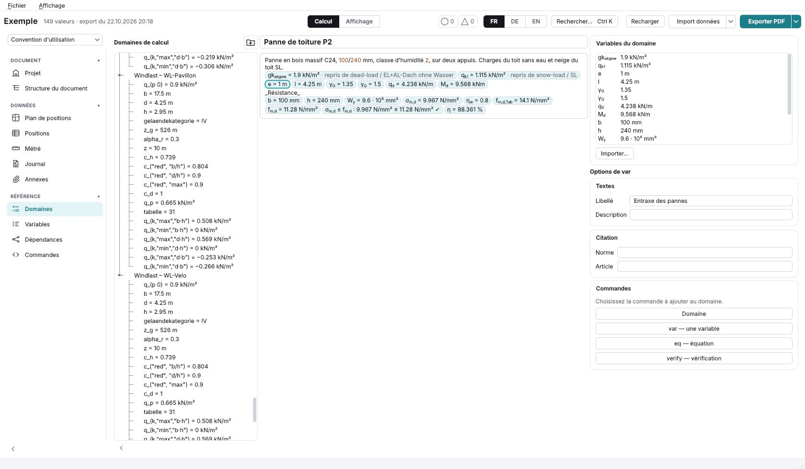
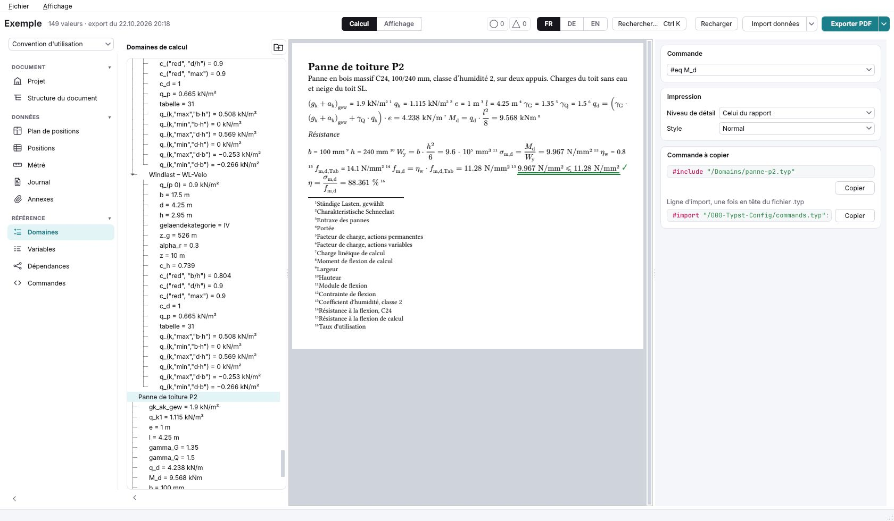
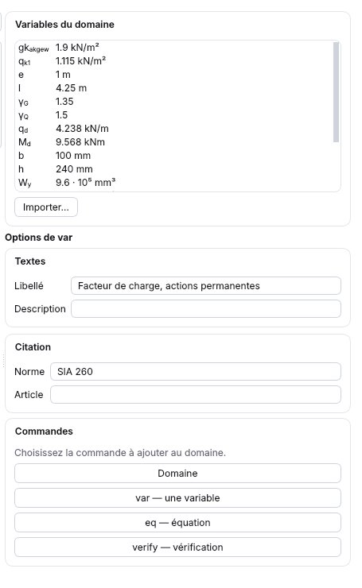
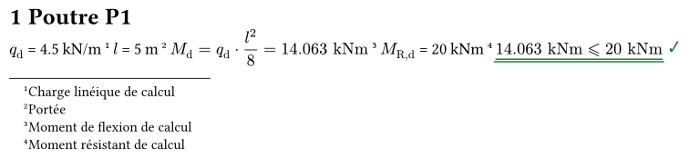
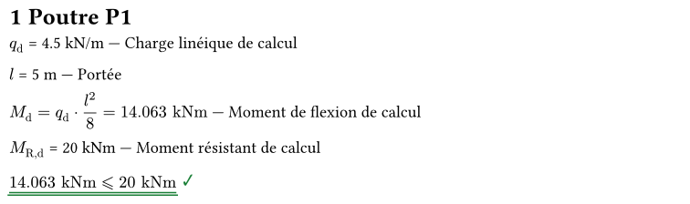
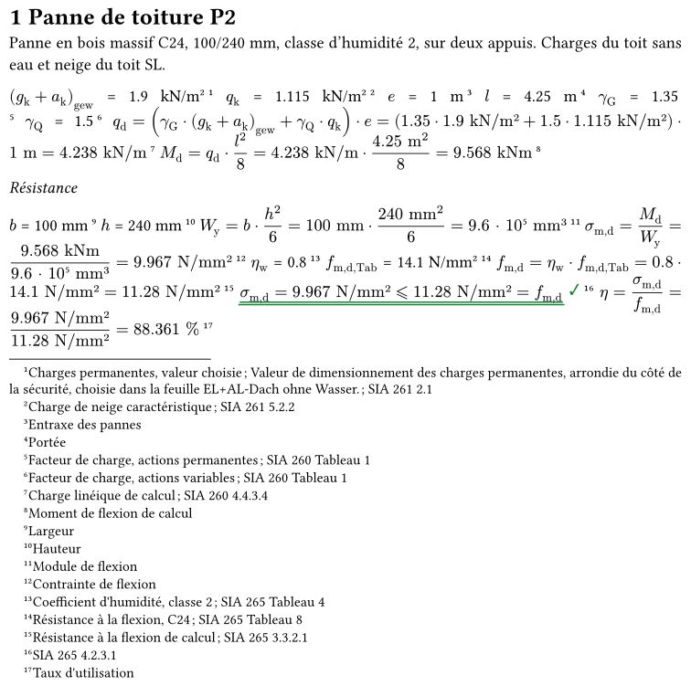
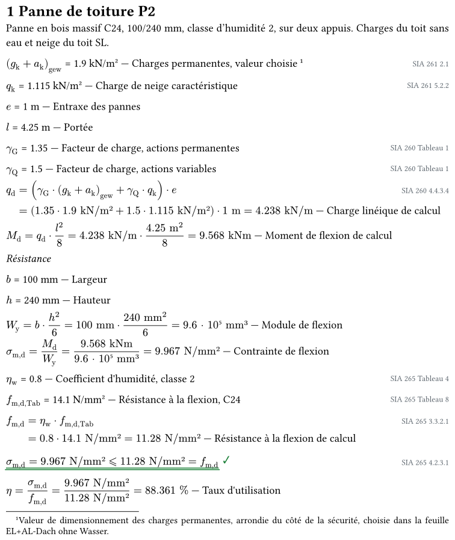

L'onglet où vous écrivez vos propres calculs : un domaine est un fichier Domains/<id>.typ, fait de lignes #var, #eq, #verify et de votre texte Typst. Ce prototype lui applique les décisions de la neige et du vent, et l'édite en trois modes du même fichier : Formulaire, Code et Affichage. Chaque nombre est celui que calcule Woodcore 0.122 ; chaque aperçu est un vrai rendu de son moteur Typst.
sigma_(m,d) / f_(m,d)) ; le fichier garde les clés. Un clic sur une variable ou sur le nom d'un résultat, à droite, l'écrit dans le calcul en cours.| Votre retour | Dans cette version |
|---|---|
| Garder Formulaire et Code ; retirer « Les deux » et les pastilles ; ajouter un mode Affichage. | Trois boutons au-dessus de la fenêtre : Formulaire, Code, Affichage. Formulaire et Code sont la vue Calcul de Woodcore ; Affichage est sa vue Affichage. Le mot « pastille » ne désigne plus que la petite étiquette de commande d'une ligne nouvelle. |
| En Code, la commande où est le curseur (#var, #eq, #verify) est reconnue tout de suite ; à droite, tous ses arguments, modifiables, qui s'écrivent dans la ligne. | Le module Arguments de la ligne, sous l'état du domaine. Il suit le curseur : la commande et sa ligne (Domains/panne-p2.typ:30), puis la clé, le symbole, le calcul, l'unité, le libellé, la description, la norme, l'article, et les arguments d'affichage (display, style, role, label-position, descr-position, norm-position, as-unit, level). Changer un champ réécrit la ligne dans le code, le curseur reste où il était. |
| En Formulaire, garder l'affichage de la variable en ligne, la formule, la variable de calcul dessous, le libellé, la norme, l'article et la description. | Inchangés. Le même module montre, pour la rangée choisie, les autres arguments, ceux que la rangée ne montre pas. L'Affichage montre tous les arguments de la ligne cliquée, avec la même liste. |
| Un clic sur une variable à droite, ou sur le nom d'un résultat, doit l'écrire dans la formule en cours ; ça ne marchait pas. | Corrigé. La cause : choisir une rangée redessine le formulaire, et le champ retenu était l'ancien, retiré de la page. Le clic écrit maintenant dans le champ où était le curseur, à la place du curseur, sans le lui reprendre ; les noms des résultats (soulignés en pointillé) s'écrivent de même. En Code, le clic écrit la clé dans le texte. |
| Une ligne nouvelle : une pastille var / eq / verify à gauche, en auto au départ, cliquable pour choisir ; les champs de la commande dessous. Aussi pour la ligne du bas. | Fait pour la ligne du bas et pour celle du +. La pastille dit ce qu'elle déduit (« eq auto ») ; un clic offre auto, var, eq, verify, texte. Dessous, les champs de la commande, remplis depuis ce que vous tapez et modifiables : symbole, valeur ou calcul, unité, libellé. Entrée ou ✓ écrit la ligne. |
| Un petit × à droite de chaque ligne pour la supprimer. | Fait. La suppression se fait d'un clic ; le message qui suit offre « Annuler ». Les lignes qui utilisaient la ligne supprimée passent en erreur dans l'état, avec leur cause. |
| Lier des variables : des cases à gauche, Ctrl+clic pour plusieurs, Maj+clic pour une plage ; un clic choisit sans importer ; « Valider » importe tout. | Fait. Les variables déjà dans le domaine sont grisées. « Valider (3) » écrit les trois liens d'un coup, dans l'ordre de la liste, au-dessus de la ligne choisie. |
| Réordonner : garder la poignée, pas de raccourci ; Ctrl+clic sur plusieurs lignes pour les déplacer ensemble. | Alt+↑/↓ retiré. Ctrl+clic ajoute une rangée au groupe (cadre pointillé bleu) ; glisser la poignée d'une d'elles déplace tout le groupe. Le refus selon les dépendances vaut pour le groupe entier. |
| Le lien vers un autre domaine : ne rien changer. | Rien n'a changé : le nom tapé, le bouton, le correctif du message, l'avertissement orange « inclus plus haut ». |
Captures de la vraie fenêtre de Woodcore 0.122, ouverte sur une copie du projet d'exemple (tests/projet-exemple), avec le domaine Panne de toiture P2 ajouté.



norm-section: "Tableau 1" (défaut 3 plus bas).Le fichier .typ reste la seule source : chaque mode l'écrit et le relit.
| Mode | Ce qu'on y fait | Le volet droit |
|---|---|---|
| Formulaire | Une rangée par ligne : le symbole composé, la valeur ou le calcul, l'unité, le résultat, la clause. La rangée choisie montre la variable de calcul, le libellé, la norme, l'article et la description. Le texte de l'ingénieur est une rangée de texte. | L'état, les autres arguments de la rangée choisie, les résultats, les variables. |
| Code | Le fichier lui-même, coloré, les résultats à droite de chaque ligne, les erreurs à la ligne. | L'état, tous les arguments de la commande sous le curseur, les résultats, les variables. |
| Affichage | Le fichier comme Typst l'imprime, élément par élément. | Le fichier, le niveau, les options du domaine à cocher, puis chaque ligne et tous ses arguments. |
Un calcul se tape avec les symboles affichés : sigma_(m,d) / f_(m,d) ; Woodcore écrit les clés dans le fichier (sigma_m_d / f_m_d), comme aujourd'hui (question 5, réponse 2). Un symbole qui n'est pas un simple nom indicé, comme (gk + ak)gew, se tape par sa clé, gk_ak_gew ; un symbole que porte déjà une autre clé aussi.
| Geste | Comment | Ce que coûte Woodcore |
|---|---|---|
| Le + entre deux lignes | Au survol de l'espace entre deux rangées ; il propose var, eq, verify, texte, lier une variable. La ligne qu'il ouvre a sa pastille, fixée sur la commande choisie. | Une barre entre les rangées du formulaire. |
| La ligne du bas | On tape « h = 240 mm », « M_d = q_d * l^2 / 8 » ou « sigma_(m,d) <= f_(m,d) » ; la pastille dit « var auto », « eq auto » ou « verify auto » ; un clic la fixe. Les champs de la commande apparaissent dessous. | formula_domain.infer_line, à côté de key_from_symbol, testée sur ses cas limites ; la pastille et ses champs dans le widget de rangées. |
| Le × d'une rangée | Supprime la ligne ; « Annuler » dans le message qui suit. | L'annulation de l'onglet, que Woodcore a déjà pour les autres gestes du fichier. |
| La poignée ⋮⋮ | On glisse la rangée ; une barre montre où elle ira. Ctrl+clic choisit plusieurs rangées, qui se déplacent ensemble. | Le geste des modules du volet droit ; le refus fm_drop_order étendu à un groupe. |
Un déplacement est refusé quand une ligne passerait au-dessus de ce dont elle est calculée, avec la raison : « Déplacement refusé : Md utilise qd, qui serait plus bas. » Pour un groupe, la règle vaut pour chacune de ses lignes et pour celles qui restent.
| Proposition | Comment | Pour | Contre, et ce que coûte Woodcore |
|---|---|---|---|
| 1 · « Importer… » (aujourd'hui) | L'onglet « Variables » passe devant, en mode choix. | Tout le projet est là. | On quitte l'onglet ; on revient sans voir où la ligne a été écrite. |
| 2 · Le nom tapé | En tapant « q_k » dans un calcul, la liste propose ce domaine, puis le reste du projet (« qk · Neige · SL · 1.115 kN/m² »). Choisir une variable d'ailleurs écrit au-dessus #var("q_k1", domain: ("snow-load", "SL")). | On lie sans quitter le calcul. La ligne de lien est visible, au-dessus, avec son origine. | Deux variables de même clé dans deux domaines doivent se distinguer dans la liste : c'est ce que fait la colonne d'origine. Coût : une complétion sur le champ, lisant la même source que l'onglet « Variables » (formula_domain.variable_domains et l'export). |
| 3 · Le bouton « Lier une variable… » | Une fenêtre de choix dans l'onglet même, groupée par onglet et par cas, avec recherche. Version 2 : une case à cocher par variable, Ctrl+clic, Maj+clic, « Valider » lie tout ce qui est coché. | Pour parcourir quand on ne connaît pas le nom. | Une deuxième voie vers la même chose. Coût faible : la liste de 2. |
| 4 · Le correctif du message | Un nom inconnu que l'export connaît : l'état propose « Lier q_k1 depuis Neige · SL ». | La faute devient un geste. | Ne joue que si la clé est la même. Coût : un appel à 2 depuis le message. |
5 · Une écriture nouvelle, SL.q_k1 | Le nom d'un domaine devant la variable, dans le calcul même. | Pas de ligne de lien. | Une syntaxe nouvelle dans lib/formula.typ, dans calc/units.py et dans la règle des noms ; le lien et son origine disparaissent du rapport. Je ne la recommande pas. |
Un piège pour un domaine de l'onglet lu par son nom. #var("M_d", domain: "poutre-p1") se calcule dans la fenêtre : Python calcule l'autre domaine sur place. Mais Typst ne le trouve que si poutre-p1 est inclus plus haut dans le rapport ; sinon la compilation s'arrête : « var: no domain "poutre-p1" is declared above this line ». Vérifié avec le moteur 0.122. Le prototype le dit en orange dans l'état ; un lien vers l'export (une paire, ("snow-load", "SL")) n'a pas ce problème.
| Geste | Sur | Ce qui se passe |
|---|---|---|
| Survol | une rangée, une ligne du code, un résultat, un élément de l'Affichage | La ligne s'allume en jaune ; les lignes dont elle se calcule en bleu ; les lignes qui l'utilisent en vert. Rien d'autre ne s'allume. |
| Survol (≈ 350 ms) | un i ou une clause en bleu | La bulle : la norme, l'édition, la clause, la page ; le texte mot pour mot, puis l'extrait de la page. |
| Clic, puis second clic | le même | L'extrait devient un module sous les résultats ; le second clic le retire (issue #96). |
| Ctrl+clic | le même | Le lecteur PDF ouvre toute la partie de la norme, la clause encadrée. |
| Clic | un message de l'état | Va à la ligne : la rangée clignote et le champ prend le curseur ; en Code, la ligne est sélectionnée. |
| Taper | un nom dans un calcul | Les variables de ce domaine, par clé ou par symbole, puis celles du projet ; ↑ ↓ Entrée. Le choix s'écrit sous son symbole. |
| Clic | une variable du module « Variables », le nom d'un résultat | L'écrit dans le calcul où était le curseur, à la place du curseur. |
| Clic sur la pastille | une ligne nouvelle | auto, var, eq, verify, texte ; les champs de la commande dessous. |
| Clic sur × | une rangée | La supprime ; « Annuler » dans le message. |
| Ctrl+clic | une rangée | L'ajoute au groupe, ou l'en retire ; Échap ou un clic simple défait le groupe. |
| Glisser ⋮⋮ | une rangée, ou une rangée du groupe | Déplace la rangée, ou tout le groupe ; refusé selon les dépendances. |
| Case à cocher | l'Affichage, « Options du domaine » | Écrit ou retire l'option dans la ligne #calc-defaults(…, scope: "domain") en tête du domaine. |
| Glisser l'en-tête, ▾, ⧉, × | un module | Comme la neige : déplacer, réduire, ouvrir dans une fenêtre, désépingler. |
Trois modes du même fichier : Formulaire par défaut, Code, Affichage. Les pastilles s'arrêtent ; le texte de l'ingénieur reste, en rangées de texte, et s'imprime comme aujourd'hui (question 1).
Un domaine nouveau s'écrit en bloc : #calc-defaults(presets: "block", scope: "domain") en tête ; un domaine existant garde ce qu'il a (question 2). L'Affichage montre cette ligne comme des options du domaine à cocher : « en bloc », et la place des libellés, des descriptions, des citations et le style de toutes les lignes qui n'en écrivent pas une à elles. Décocher « en bloc » retire l'option ; décocher tout retire la ligne.
Ajouter par le + et par la ligne du bas, déduite (question 3) ; lier par le nom tapé, le bouton et le correctif du message (question 4) ; une vérification qui ne passe pas est orange (question 6) ; un domaine de l'onglet lu par son nom avertit en orange tant qu'il n'est pas inclus plus haut (question 7).
Ce que l'onglet prend de la base commune (issues #94 et #95), et ce qui lui est propre.
Pas de formulaire déclaratif ni de dessin : ce que l'ingénieur écrit est la forme même. L'onglet n'a pas de figure par défaut ; une figure qu'il écrirait dans son texte serait une rangée de texte.
Le domaine Poutre P1 du projet d'exemple, compilé par #include "/Domains/poutre-p1.typ" au niveau 2. À gauche tel qu'il est écrit, sans #calc-defaults ; à droite avec la ligne #calc-defaults(presets: "block", scope: "domain") que le prototype propose d'écrire en tête.




1. Un domaine de l'onglet s'imprime en un seul paragraphe. L'onglet n'écrit pas #calc-defaults(presets: "block") ; les valeurs se suivent, justifiées, avec une note par ligne (dix-sept notes pour Panne P2 au niveau 3). Les fichiers que Woodcore écrit pour la neige ou une vérification ont cette ligne.
2. L'Affichage d'une ligne n'offre que le niveau et le style. display_options.SPECS donne, pour la vue Affichage, level et style à #var et #eq, level seul à #verify. Aucun des arguments fins de la 0.121 (display, display-formula, display-equation, label-position, descr-position, norm-position, role, as-unit) ne se règle dans l'onglet.
3. Le champ « Article » écrit norm-ref:, les fichiers écrivent norm-section:. Pour γG, cité norm-section: "Tableau 1", le champ est vide. Le remplir ajoute norm-ref: à côté, et la compilation s'arrête : « var: norm-section: and norm-ref: are one argument -- write norm-section: alone » (vérifié avec le moteur).
4. Les refus du calcul sont en anglais dans une fenêtre en français. La pastille montre le texte de units.FormulaError, coupé à 80 caractères : « eq: no variable named 'L' here -- declared here: gk_ak_gew, q_k1, e, l, gam… ». Les mots doivent passer par les glossaires, comme le fait le prototype.
5. Une faute devient quatre pastilles rouges. Avec L pour l dans Md, Python refuse Md, puis σm,d, la vérification et η, chacune avec son propre message. Typst s'arrête à la première. Le prototype ne montre que la cause et dit « 3 lignes plus bas en dépendent ».
6. Une variable liée s'affiche sous sa clé. La pastille et la carte des variables écrivent « gkakgew » au lieu de (gk + ak)gew, le symbole de l'export, et « repris de dead-load / EL+AL-Dach ohne Wasser » au lieu du nom de l'onglet, « Charges permanentes ».
7. La liste de gauche montre les symboles en code Typst. « c_("red", "b/h") = 0.804 », « sigma_(m,d) », « f_(m,d,"Tab") » ; la carte des variables, à droite, les compose. Et chaque domaine y est déplié : plus de 300 lignes.
8. La parenthèse oubliée n'est pas à la même ligne. Le lecteur de Woodcore dit « line 24, column 1: a `,` or a `)` is expected here », là où il bute ; Typst dit ligne 19, colonne 5, là où la parenthèse s'ouvre. Le prototype donne la ligne de Typst.
9. Dans un bloc, #var et #eq n'ont pas la même police. Le « = 1.35 » d'une ligne #var est plus petit et d'une autre police que le « = 4.238 kN/m » d'une ligne #eq qui la suit (rendu ci-dessus, niveau 3).
10. Pour un nom inconnu ou des unités qui ne s'additionnent pas, Typst ne nomme pas la ligne du domaine. Son message finit dans le moteur (« while calling `get` at lib/formula.typ:1510 ») : rien ne dit que c'est la ligne 13 de Domains/panne-p2.typ. Seule la fenêtre peut le dire ; le prototype l'écrit dans l'état, à la ligne.
11. Le projet d'exemple de examples/ annonce un domaine absent. examples/data/formulas.json nomme poutre-p1 dans Domains/poutre-p1.typ, mais examples/ n'a pas de dossier Domains/ ; seul tests/projet-exemple l'a.
12. Deux mots retirés restent. Le message fm_state_misnamed parle encore de #var-domain, retiré en 0.121, et les mots fm_cmd_val et fm_cmd_var-unit restent dans le glossaire de l'onglet sans bouton qui les montre.
13. Dans la vérification dépliée BI-01, eta_s et eta sont la même formule écrite deux fois, et fm,y,d n'a pas de clause, alors que ft,0,d de ZT-01 cite SIA 265 Tableau 8.
| Quoi | Où | Coût, ce qu'il faut décider |
|---|---|---|
| Le formulaire et le code | calc/tools/formula_tab*.py : un widget de rangées et un éditeur à deux marges remplacent FormulaText et ses pastilles ; le module « Arguments de la ligne » lit la ligne choisie ou celle du curseur | Le plus gros morceau. Le modèle ne change pas : formula_domain.parse_domain, patched et compute restent la source ; formula_layout (la place des pastilles) n'a plus d'usage. |
| Les messages | units.FormulaError et formula_domain.DomainError rendent un code et ses valeurs ; l'onglet les dit dans la langue de la fenêtre (fm_e_*) | Comme le font déjà les refus de DomainError. Le rapport garde ses messages anglais de Typst. |
| La ligne déduite | formula_domain.infer_line, à côté de key_from_symbol | Une petite règle, des tests. |
| Les arguments fins dans l'Affichage | display_options.SPECS, vue display | Les ajouter à #var, #eq et #verify, valeurs lues dans lib/formula.typ ; write_display les écrit déjà dans le fichier. |
| « Article » | display_options.NORM_REF | Lire et écrire norm-section:, et lire norm-ref: d'un fichier ancien. |
presets: "block" et les options du domaine | formula_domain.header_of et new_domain ; la ligne #calc-defaults lue et écrite option par option | Écrit pour un domaine nouveau ; un domaine existant garde le sien (question 2). Les options sont celles que calc-defaults accepte déjà (lib/formula.typ, calc-default-names) : rien de nouveau dans le moteur. |
| Le calcul tapé en symboles | formula_domain : la table symbole → clé des lignes au-dessus | Comme le fait déjà l'onglet ; un symbole qui n'est pas un nom indicé se tape par sa clé. |
| Supprimer, déplacer à plusieurs, lier à plusieurs | le widget de rangées, la fenêtre de choix | Le refus selon les dépendances, étendu à un groupe ; l'annulation de l'onglet. |
| Les extraits de la norme | calc/norms/ : par clause citée, l'édition, la page et le rectangle | Relevés ici pour huit clauses (SIA 260, 261, 265), en FR, DE et EN pour la SIA 260. Une clause que l'ingénieur cite sans relevé montre son nom, sans bulle. |
| Les survols liés | la brique commune ; les dépendances viennent de formula_domain.compute (les opérandes de chaque ligne) | Rien de nouveau à calculer. |
| Le lien par nom tapé | la source de l'onglet « Variables » (variable_domains et l'export) | Une complétion ; l'avertissement « inclus plus haut » pour un domaine de l'onglet lié par son nom. |
| Décisions à écrire | docs/decisions.md §13 et docs/ui/tab-formulas.md | La fin des pastilles (D-01 à D-05 de l'issue #40), le formulaire et le code, presets: "block" par défaut. |
Ce chantier passe par big-feature : l'onglet, deux modules de calcul, un contrat d'affichage et plusieurs décisions changent.
| Question | Votre réponse |
|---|---|
| 1. L'édition | Le formulaire et le code ; « Les deux » et les pastilles s'arrêtent ; un mode Affichage à côté. |
| 2. Un domaine nouveau | Woodcore écrit #calc-defaults(presets: "block", scope: "domain") en tête ; la ligne s'active et se désactive dans l'Affichage, avec les autres options du domaine. |
| 3. Ajouter une ligne | Le + entre deux lignes et la ligne du bas, déduite. |
| 4. Lier une variable | Le nom tapé, le bouton « Lier une variable… » et le correctif du message. |
| 5. Un calcul se tape | Avec les symboles affichés (sigma_(m,d) / f_(m,d)), traduits en clés comme aujourd'hui. |
| 6. Une vérification qui ne passe pas | Orange : une information sur l'ouvrage, le fichier se compile. |
| 7. Un domaine de l'onglet lu par son nom | Woodcore avertit en orange tant que ce domaine n'est pas inclus plus haut dans le rapport. |